A policy changes. Now someone needs to find every contract affected by it.
End-to-end design
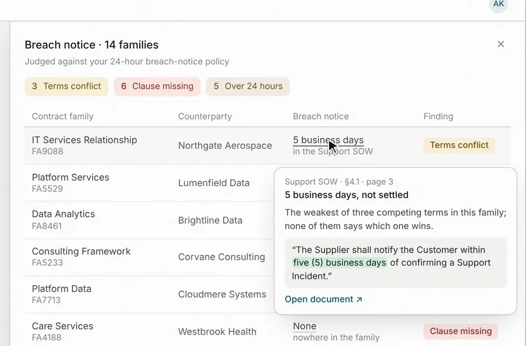
Partly shipped
Playing
Build · Shipped partlyMy role: end-to-end design of AskSirion’s search and its results listing.AskSirion on sirion.ai ↗
Product design · AI search and result behavior
In most searches, a wrong answer means trying again. In legal work, a missed contract could mean an unnoticed breach. So we designed search to ask when something is unclear, look across every contract in a deal, and flag conflicting information instead of guessing. The goal: find the contracts you need, quickly and accurately.
AI can extract an answer. But before trusting it, a contract reviewer needs to see where it came from.
End-to-end design · Month-four retention 5% → 23%
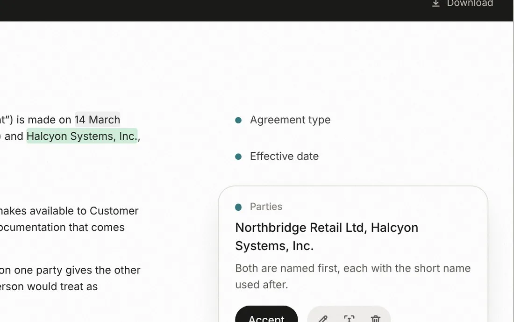
Shipped
Playing
Iterate · ShippedMy role: end-to-end design of AI contract review (Auto Extraction).
Product design · AI-assisted contract review
We made the source part of the review itself. Every extracted value opens the exact sentence in the contract, where the reviewer can accept, correct or delete it. Instead of a confidence score, the original words are the proof. Month-four retention rose from 5% to 23% as measured users grew from 860 to 2,380.
A clause may look simple today. But its meaning could have changed several times across different documents.
End-to-end design
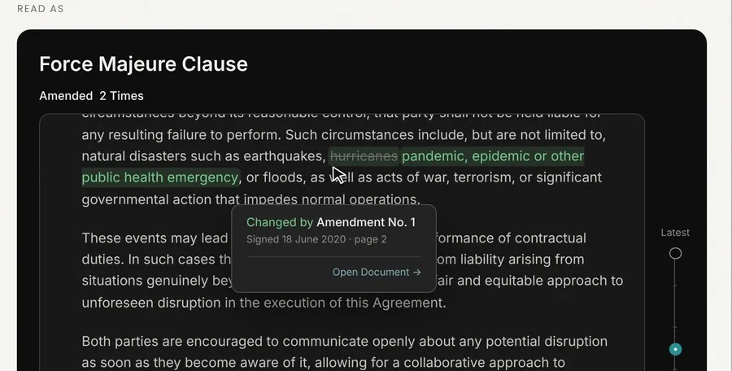
In development
Playing
Build · In developmentMy role: end-to-end design. Being built now, to ship as a feature of the contract page.
Product design · Contract relationships and information architecture
We designed a way to read the clause as it stands today, without piecing together every amendment by hand. Each change is marked with its date and source, and one click opens the signed document at the exact paragraph behind it. Success would mean reviewers reopening documents less often just to check they’re reading the right version.
04
Reach
If I accept it, what else changes?
A change to one clause can create a problem somewhere else in the contract. Reviewers often have to find these knock-on effects themselves.
We explored a redlining experience that shows the suggested edit in the text, explains where its wording came from, and points out other clauses that may no longer match, with a proposed fix ready to review. The goal is to catch these conflicts before signing, not after.
05
Sensitivity
Does it need me now, or can it wait?
Not everything an AI agent finds needs our attention. Some things can wait. Others could change what we do next.
Own exploration
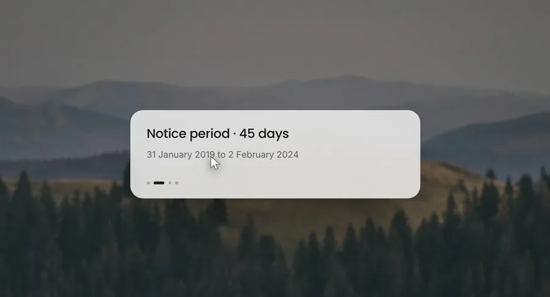
Concept
Playing on a loop. The same card, asked to say more.
Hypothesis · Own workAI agents · When to interrupt, ask, or stay quiet
Independent design exploration
As AI agents get better at working on their own, I’m exploring how interfaces should decide when to involve a person. That shouldn’t depend only on how confident the AI is, but also on what’s at stake if something gets missed. Sometimes the right design is to stay quiet. Sometimes it’s a hint. And sometimes it’s to interrupt.
My role: end-to-end design. The full case study isn’t public yet. Mira’s walkthrough shows the problem and the decision with no client details, and I’m happy to go deeper in person.
What does this clause say today—and when did it change?
To answer that, reviewers often have to read the original contract alongside its amendments and piece the changes together. I wanted to bring the current wording and its history into one view, while keeping the source close enough to verify.
A paragraph can have more than one history
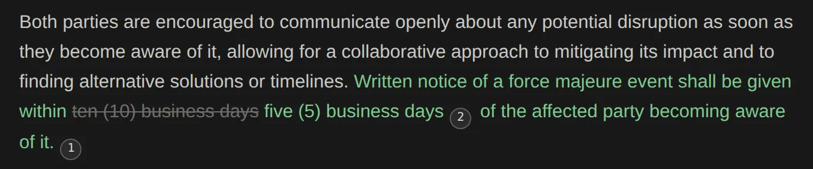
A sentence might be added in one amendment, then changed in another. Giving the whole paragraph one citation would hide that distinction.
I attached markers to the specific parts that changed. In this example, the notice requirement was added in 2020. The deadline changed from ten days to five in 2022. Each marker leads to its own date and source document.
Show the change, then let people check it
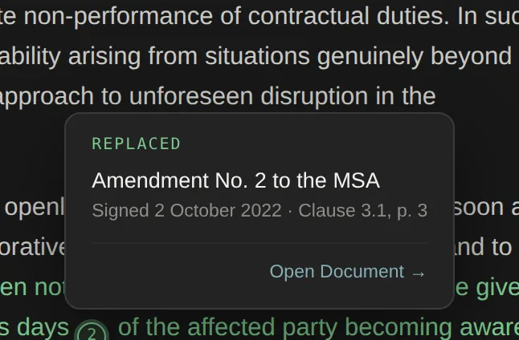
The crossed-out and green words show the difference directly in the clause. Selecting a marker opens a card with the earlier wording, the amendment details, and the source passage.
I kept the card focused on what helps someone verify the change, without repeating what the paragraph already shows. From there, they can open the signed document.
Make time visible
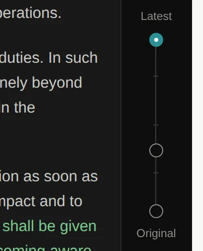
The timeline connects the original clause to its later versions. I spaced the points by date, so the gaps show how far apart the changes happened.
Keep the view steady
I initially used hover to switch versions. But moving the pointer made the text and timeline shift unexpectedly.
I changed it to a click. People can choose a version and read it without the view changing underneath them.
Let each element do its job
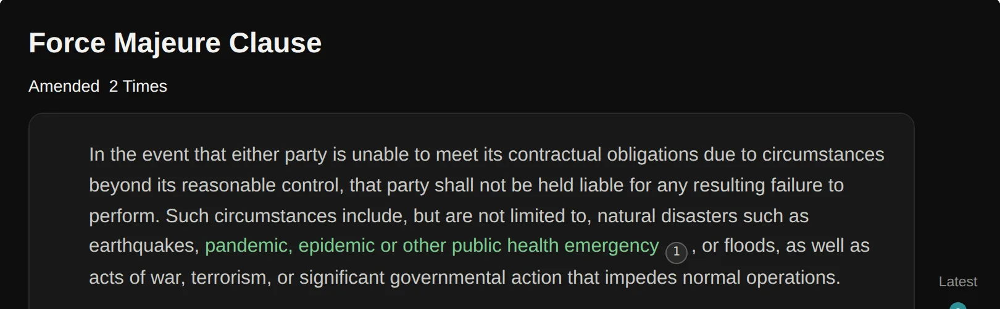
I kept the header to “Amended 2 times.”
The highlighted words show what changed. The markers and source cards explain where it came from. The header only needs to tell people how many times the clause was amended.
What I would work on next
This becomes harder to read when a clause has many amendments. Too much crossed-out text starts competing with the wording someone came to understand.
The next step is to keep the current clause clear, with older changes available to expand when needed.
Own design, concept stage. The suggestions, the contracts they cite and the links between clauses are scripted sample data.
Reviewers check every AI edit. The edit they worry about is not the one they can see. It is the definition three pages up that no longer matches, or the cross-reference that now points at the wrong clause.
The edit lands where the words are
No side panel. Select a paragraph, say what should change, and the redline appears in the text, the way tracked changes already do.
Every change keeps its reason
Hover the green text and it says who changed it, when, and what was asked. Word shows that for a person. This shows it for the agent.
A suggestion says where it came from
Each one names the signed contract its wording came from, and where it sits on the playbook: standard, fallback, or off-playbook. Wording that has already survived a negotiation is easier to trust than wording written a second ago.
An edit shows what else it reaches
When a change leaves another clause out of step, both are marked. One click opens the other clause with the fix already written.
Not solved yet
Here the links between clauses are scripted. Finding them for real needs the contract’s definitions and cross-references mapped first.
The AI had found the values. Reviewers still had to find the evidence.
A contract could have 128 extracted fields, and a reviewer was still accountable for checking every one. A confidence score and a page number gave them somewhere to start, but left much of the verification work to them.
I owned the review redesign from research synthesis through interaction design and handover. The question I kept returning to was: how much work does someone have to do before they can accept an answer?
Keep the answer close to its source
I started with how people already review documents: they mark the words they need to check.
That became the rule for the interface. Each extracted value should stay connected to the passage it came from. Reviewers could inspect the answer while keeping the contract in view.
Design for a whole contract
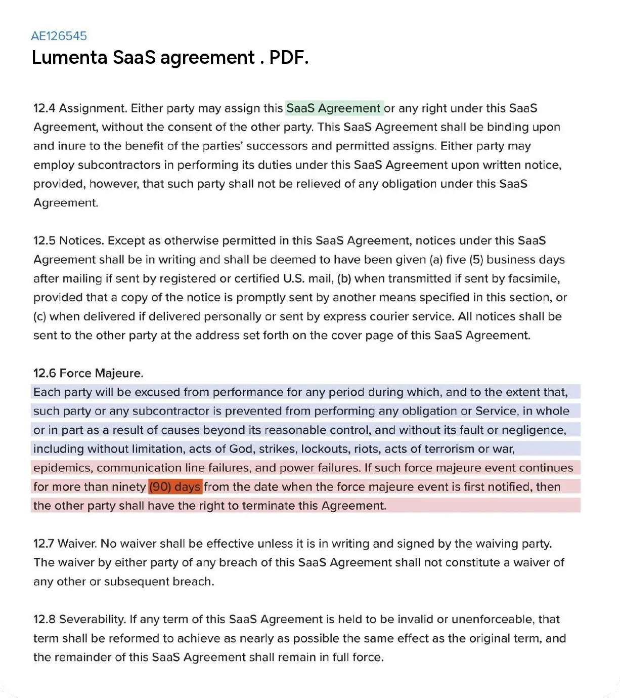
1 · Inline highlights
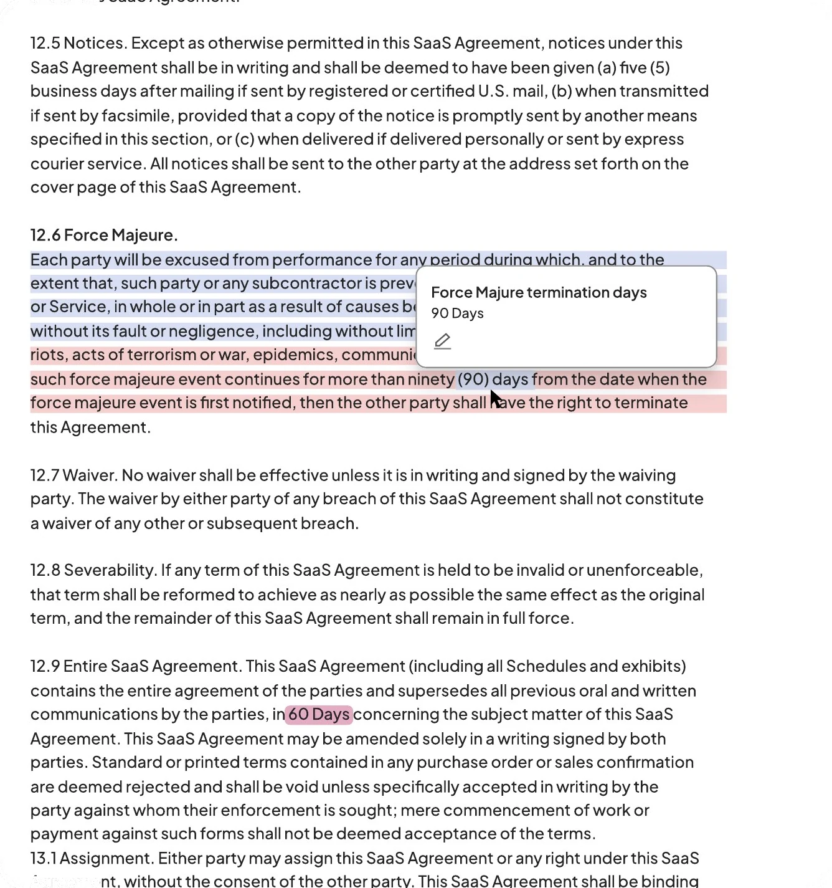
2 · Hover cards
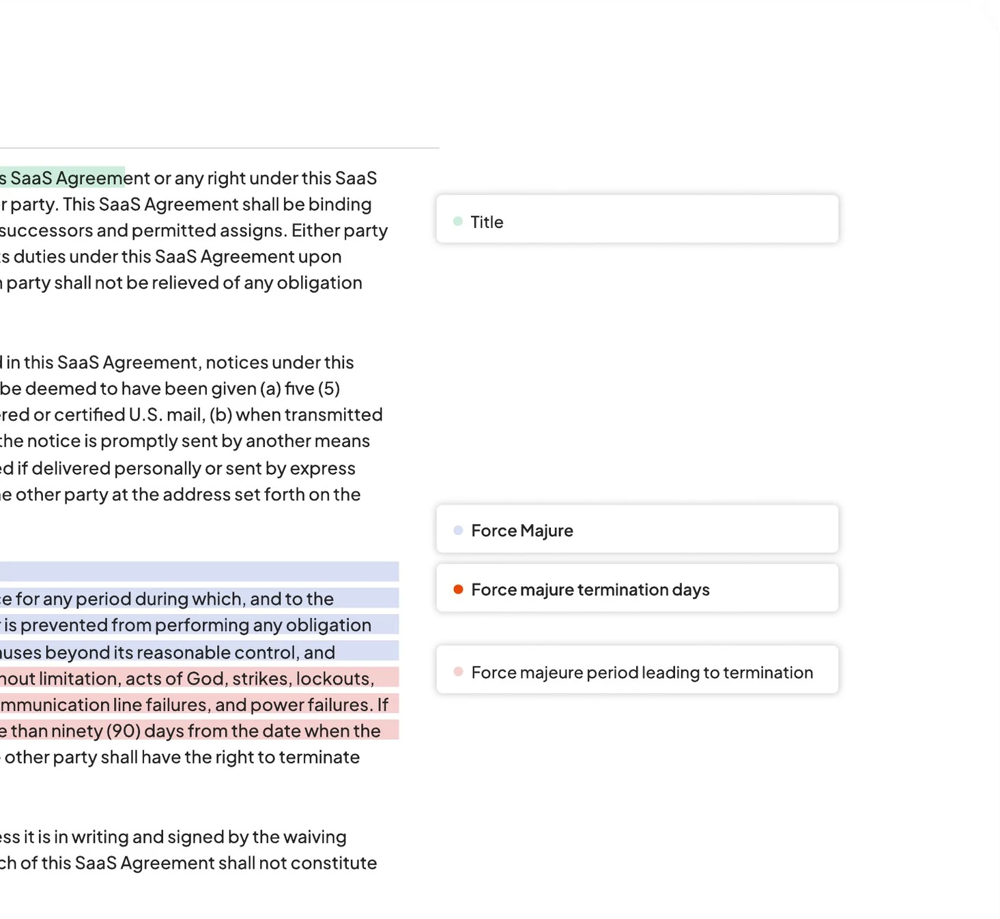
3 · Margin labels
My first version used inline highlights. They made values easy to spot, but hid the detail needed to judge them.
Hover cards brought that detail closer. Checking one value became easier, but checking a hundred still meant a hundred small interruptions.
I moved to visible labels in the document margin, aligned with their source passages. The reviewer could follow an order through the contract instead of repeatedly searching for the next item.
Give each decision a moment
After someone accepts a value, the confirmation appears first. Then the next field opens, and the document moves to its source passage.
That small pause lets people see that their decision registered before the view changes. The interface handles the navigation; the reviewer keeps control of the judgment.
Give people something they can question
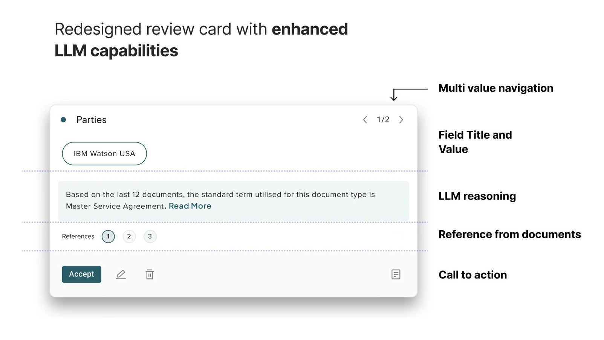
I removed the confidence percentage. It told reviewers how sure the model was, but gave them little to examine.
The card instead shows the model’s reasoning and references that open the relevant passage. Someone can check the source, disagree with the explanation, or correct the value.
Keep corrections connected too
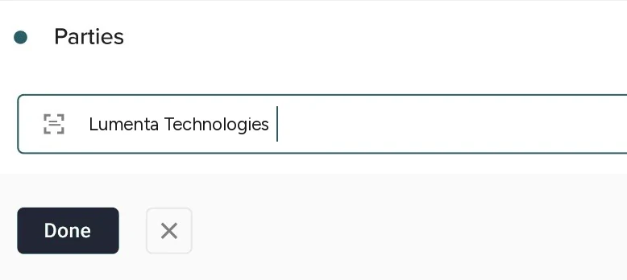
If the answer is wrong, reviewers can edit it in place. If it came from the wrong passage, they can select the right one and re-tag it.
The corrected answer keeps its evidence.
What changed after shipping
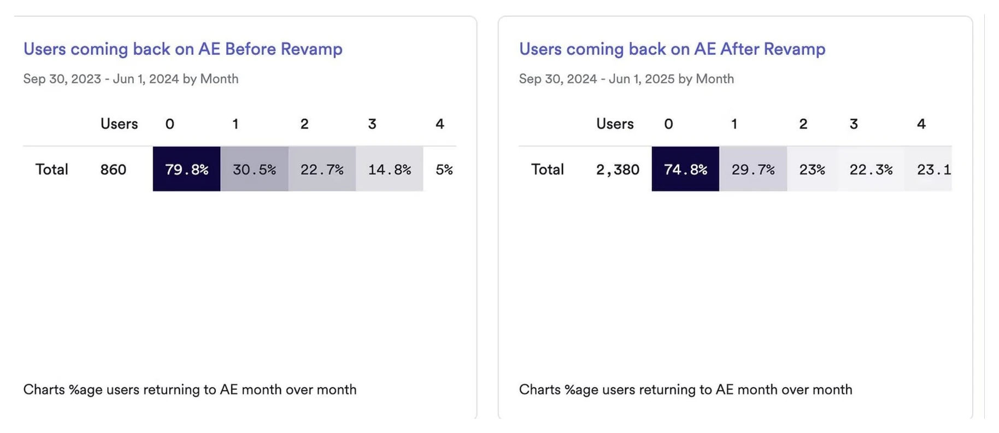
Month-four retention rose from 5% to 23%. More people were still returning to the module after the initial use.
The customer mix and AI model also changed during that period, so I would not attribute the whole increase to the redesign. The result is encouraging; the full case explains the comparison and its limits.
PMs, engineers, legal engineers, legal experts, and feedback from IBM’s legal team
Live today
AskSirion search, charts and deal-level listing
What’s next
Generated columns, clause history and policy checks in development
The search CLM queries explained
Where should a search result actually land?
In Sirion, people search across thousands of contracts for suppliers, obligations, deadlines and risks.
The push for AI search came from the market. Once people got used to asking AI tools questions in plain language, they expected the same from their contracts. So search had to work from a question written the way people speak, not only from exact words.
We looked at the moments when people actually come to ask. The clearest was a policy change: a company decides suppliers must report a data breach within 24 hours, and someone needs to know which contracts don’t meet it. Others were a renewal date coming up, a new regulation, and a supplier the business was starting to worry about.
The hard part is that contracts don’t stand alone. One supplier might have a master agreement, several smaller ones, and amendments that change the original terms.
Finding the right text is one thing. Knowing which contract it belongs to, and how it relates to the others, is another.
I worked on this alongside a co-designer, PMs, engineers, legal engineers and legal experts, with feedback from IBM’s legal team, which showed us the problem at a much larger scale.
01
The scale problem
One thing I understood from working with IBM’s legal team was the scale of information people were dealing with.
Search could find the right text in a document. But when a supplier has multiple related contracts, a list of matching documents doesn’t necessarily help someone understand the overall situation.
Take the breach-notice policy again. Someone asks which contracts don’t meet it.
The search might find different reporting periods across different documents. The person still needs to understand which terms actually apply.
That made us look beyond just finding the matching documents.
02
From a fixed hierarchy to intent-based results
The initial hypothesis
Contract information sits in five layers, from the widest to the smallest. A search result has to land on one of them.
Counterparty
Deal / family
Contract
Document
Clause
Counterparty is the supplier. A deal is all their contracts together. A clause is one paragraph inside a document.
I wanted results to land on the deal, because contractual meaning often comes from the relationships between agreements, amendments and supporting documents, not from one matching document on its own. Engineering favoured document first, which matched how information was retrieved.
Engineering’s view
Document first
Follows how retrieval finds text. Good when the question is about one document. Weak when an amendment elsewhere changed the term.
My view
Deal first
Shows terms across related agreements. Good when the answer spans the deal. Slow when someone just needs one document.
The question was whether every search should follow the same result hierarchy.
What changed our thinking
Discussions with subject-matter experts challenged the assumption. Even when people search for the same contractual concept, they may be trying to do different things.
“What is the effective notice period for this deal?”
Needs a deal-level answer that accounts for the related agreements
Deal
“Which document contains the notice period?”
Needs document-level results with supporting evidence
Document
Example questions, not quotes from the sessions.
Neither hierarchy was right every time. The right result depended on what the person was trying to do.
Translating intent into product behaviour
With engineering, we defined representative intent categories and the result behaviour for each, using questions from an existing question bank to shape the patterns.
Representative queries, the interpreted intent, the result level and the expected presentation
Representative query
Interpreted intent
Result level
Expected presentation
What is the effective notice period for this deal?
Deals with conflict indicators, relevant terms, supporting documents
Show contracts expiring in the next 90 days.
Find contracts matching a date condition
Contract
Contract listing with expiry date, counterparty and status
Which documents contain a governing law clause?
Locate clause evidence
Document
Matching documents with clause excerpts and citations
Show agreements where a required clause is missing.
Identify missing contractual provisions
Contract / Document
Relevant agreements, computed found / not-found status, evidence where available
Representative intent-to-result patterns, not an exhaustive mapping of every question. Examples illustrate expected behaviour rather than verified agent outputs.
The design decision
We moved from a fixed result hierarchy to an intent-dependent presentation model.
Instead of forcing every query into a deal-first or document-first structure, we defined how search should adapt its result level, default columns, computed information and evidence presentation to the question being asked.
Part of this is already live. For data questions, AskSirion answers with charts and a table of the matching contracts.
Shipped in Sirion. A data question gets its answer as charts, by customer and by region, with the matching contracts one click away.
This took the design work beyond the layout of search results into reusable interaction and behaviour patterns for the AI experience.
My contributionShaping the expected user-facing behaviour, in collaboration with the team.
EngineeringImplementing the agent and evaluating its performance against the question bank and golden dataset.
The structure of the answer should follow the user’s task, not simply the structure of the underlying data.
What remained to validate
The matrix set the expected behaviour, but it did not by itself prove that people could consistently find and correctly interpret their answers.
The next validation would check whether people could complete representative search tasks accurately, recognise an incorrect interpretation, and trace an answer back to the supporting contractual evidence.
03
When a question can mean more than one thing
Another problem was how the system understood what people were asking.
We initially had suggested follow-up questions, similar to early AI search tools. There was also a thumbs-up and thumbs-down option for feedback. Almost nobody used the thumbs.
But more importantly, suggesting the next question wasn’t solving the problem when the current question could mean different things.
For example, “Which contracts don’t meet the new 24-hour policy?” Does that mean contracts with a longer reporting period? Contracts where the clause is missing? Or older contracts signed before the new policy?
But how does the system know when a question is clear enough or not? That needed a rule, not a guess.
The rule:
I proposed a simple confidence check. Take a question about “contract value”.
For agent, that could mean total contract value and more
Someone asks“Show contract value by supplier”
“Contract value” could mean
Total contract valueCommitted valueMaximum valueEstimated annual spend
Option 1
Proceed – safe enough to assume
If meaning is much more likely, and getting it wrong would make little difference to the result.
Search agent makes its assumption visible
Using: Total contract value
Or Change ↗
Option 2
?Ask – too important to guess
Several meanings remain plausible, and choosing the wrong one could change the answer a lot.
Show a clarifying card
We explored a clarifying card where users could choose what they meant or write their own interpretation.
The idea wasn’t to ask users to clarify every search. When the question was clear, search could simply proceed. When different interpretations could change the result significantly, it made sense to ask first.
For more complicated searches, we also explored showing a plan before the system runs, so people could see what information it intended to check.
This connects to the next phase we’re building: clause history, checks against company policy and AI-generated columns. For example, a column could be generated in real time to show where contracts have conflicting terms, instead of relying only on data already stored in the table.
The important part is that a conflict should be visible, along with the supporting documents. The system shouldn’t simply make the legal decision for the person.
04
Making search results easier to understand and correct
Another part of the work was bringing search and filters together. Earlier, people often used advanced filters to narrow down the list.
We explored how someone could simply type what they wanted, and the system could turn that question into filter criteria. Those criteria appear as editable chips, so people can see how search understood their question.
We explored different versions of this, including a more natural sentence-like format. At rest, it reads like text. When someone interacts with a condition, it becomes editable.
We also spent time on empty results. Sometimes a search returns nothing because a filter is hiding the relevant contracts. Sometimes the correct answer really is that nothing matched.
We wanted the interface to explain that difference and help people make corrections without starting over.
After shipping, one observation was that fewer people seemed to go directly to advanced filters, and more started by typing what they wanted. We don’t have an exact measurement for that yet.
Where the work stands
AskSirion search, deal-level listings and charts for data questions are live.
We’re still building generated columns, clause history and policy checks. Some of the clarification and question-led interactions shown here are explorations, and the screens are from my prototype.
One thing I still want to validate is how we represent a finding at the deal level without making every contract in that deal appear to have the same issue.
That distinction matters because the result should help someone understand the situation, not create another misunderstanding.
What next
From a search result, people could go further and ask the AI to act on it. For example, “Draft a counter-negotiation document for these contracts” or “Show me a fix plan for these breach contracts.” Search is just the beginning. Many more AI actions on contracts are still being explored.
When AI knows the answer, how does it know when to speak?
How I think · Own work · 2023–26
The same information can mean something very different depending on when it reaches you.
Your wife calls at 2 in the afternoon. You might answer or call back later.
But if she calls at 3 in the morning, you’d probably pick up immediately. Something might be wrong.
Same person. Same call. Yet you react differently because you understand the situation.
We make these judgments all the time. But can an AI agent do the same? When should it interrupt us, and when should it stay quiet?
01
Where it started
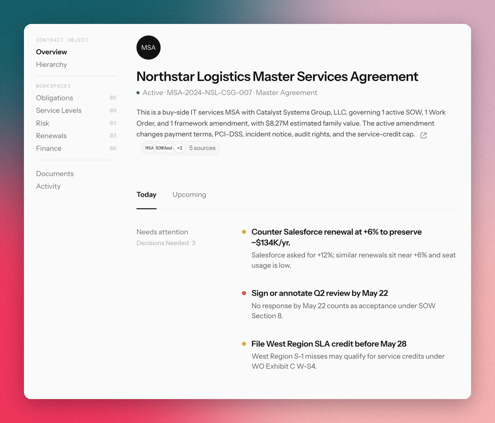
I was designing an AI-first contract tool. The agent reads agreements, connects clauses to amendments and invoices, and identifies things people might need to act on.
Imagine opening the tool in the morning to find 200 AI-generated insights.
200 insights by morning. A person can act on a handful.
You’d still have to read through everything to work out what matters. We’d simply replaced reading contracts with reading AI.
Showing only the top five seemed reasonable. But important isn’t always urgent. One finding can wait three months. Another might affect a payment going out in fifteen minutes.
The question wasn’t just what to show. It was when, to whom, and how loudly.
02
Same finding, different urgency
At 9 AM, the agent reads Acme’s payment term as Net 60. At 11 AM, an amendment arrives changing it to Net 45. Now consider two situations.
9:00Payment term: Net 60
11:00Amendment 3 arrives. Payment term: Net 45
Payment is three months awayQuietUpdate the term quietly. Keep the evidence. No need to interrupt anyone.
Finance is paying at noon using the old termInterruptShow the change before the payment goes out.
The finding hasn’t changed. What changed is how much attention it deserves.
Decision 1. Urgency depends on the situation, not just the finding.
03
What should the agent do?
This made me question whether changing the appearance of an alert was enough. Sometimes the agent should simply update information. Sometimes it needs to interrupt. And sometimes it should ask, or stop warning once the issue is handled.
I explored four responses to the same finding.
The findingAmendment 3 changes Acme’s payment term from Net 60 to Net 45.
QuietNothing needs attention yet. Next payment is three months away.
Payment termNet 45Updated at 11:02 from Amendment 3.
InterruptSomeone is about to act. A payment is being processed at noon.
Today’s payment to Acme uses Net 60. Amendment 3 changed it to Net 45.
Review before payingAlready handled
AskSomething important is missing. The agent can’t see when the next payment is due.
Is a payment to Acme planned this week? The term changed to Net 45, but I can’t see your payment schedule.
Yes, this weekNoNot mine
After a person responds
AdaptSomeone has already handled it. Finance confirms the change is taken care of.
Handled by FinanceWon’t raise this again unless the payment details change.
These aren’t just four ways of displaying an alert. They’re four different things the agent can do.
But there’s a catch. Asking also takes time. If a payment is going out in fifteen minutes, waiting for an answer may be worse than interrupting.
04
When the agent gets it wrong
Consider two contracts.
Contract A
Expires in two days. The vendor is already being offboarded.
Contract B
Expires in ten days. The renewal needs a decision this week.
By date A firstBy situation B first
Sort by date and Contract A comes first. But anyone who knows the situation would prioritise B. The agent could read every document correctly and still get the priority wrong.
I initially thought more context might solve this. But an agent can know 99 things about a contract and still miss the one fact that matters: Finance is paying at noon.
Knows 99 things
Missing: payment at noon
Stays quiet. Wrong call.
Knows 3 things
Payment at noon
Net 45 amendment
Finance owns it
Interrupts. Better-informed call.
Some facts may never reach the system. A renewal agreed over the phone. A supplier replaced after a meeting. An issue someone has already resolved.
The agent needs to be clear about what it knows and make it easy for people to correct it. “We’re already on it” isn’t just dismissing an alert. It’s giving the agent information it didn’t have.
Decision 2. More context doesn’t always mean better judgment. What matters is the fact that could change the decision.
05
What the agent needs to consider
These examples helped me narrow the problem to four questions.
FindingAn amendment changes the payment term
→
ConsequenceWhat happens if this is missed? Can it be undone?
TimeWhen does it start to matter?
Enough to judgeIs the information needed to make the decision missing?
PeopleWho owns the decision? Has someone already acted?
→
ResponseQuietSurfaceAskInterrupt
↺ When a person responds, that answer becomes part of the context for the next decision.
Together, these shape whether the agent stays quiet, shows something, asks, or interrupts.
Earlier, I’d explored five levels of attention, from Nothing to Interrupt. I still find them useful, but my thinking has shifted. The level of attention is the outcome. The harder problem is deciding which response the situation deserves.
06
What testing changed
I built a small clickable prototype around the Net 60 to Net 45 change. People saw three situations: a payment going out at noon, one in three weeks, and one where the payment date was unknown. For each, they chose whether the AI should interrupt, show a small sign, or ask a question.
Seven people tried it across two rounds, about two minutes each.
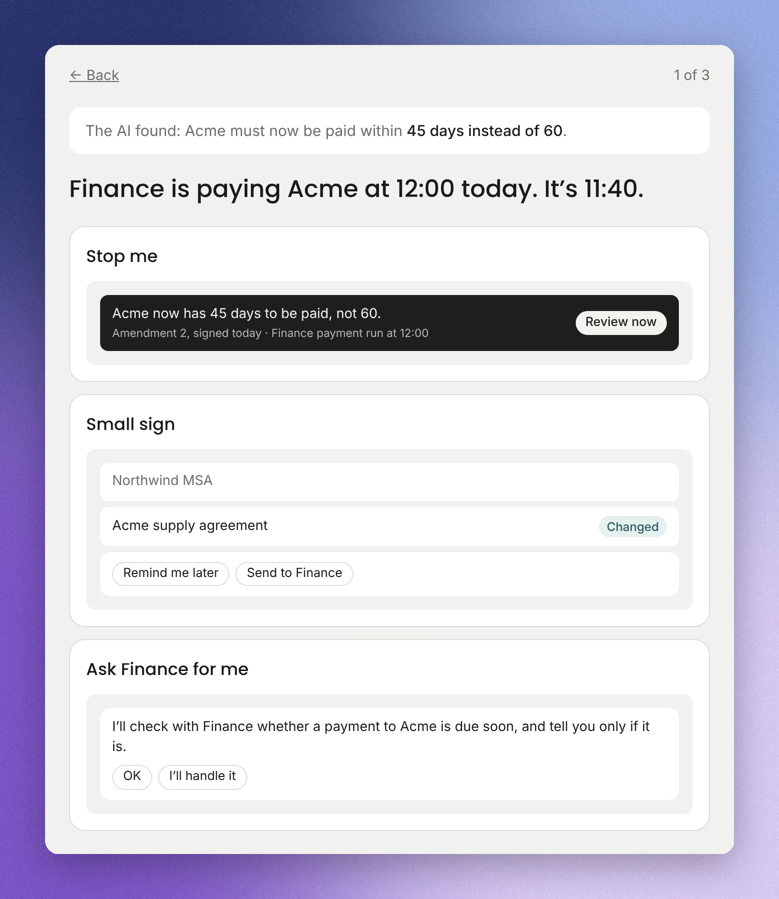
What people saw in round two, for the noon-today moment.
I expected the urgent payment to trigger an interruption, the distant one to stay quiet, and the unknown date to trigger a question. The first two went as expected. The third surprised me.
Nobody wanted the AI asking them when Finance would pay. They didn’t know. Finance did.
I’d been thinking about missing information without considering who could actually provide it. That changed the design.
BeforeAsk the user
→
What I learnedThe user may not know
→
AfterAsk Finance for me
Testing also revealed two other things
Show the proof. People wanted to see the contract text before trusting an urgent warning.
Let people return later. A quiet notification needed a “Remind me later” option.
Decision 3. Knowing who owns the decision matters as much as knowing how urgent it is.
This was a small test, and I didn’t record participants’ roles. These are early design directions, not validated rules.
But one thing stayed with me.
I had designed for missing information without asking who could supply it.
What’s different now is that AI agents can find hundreds of things on their own, across documents and systems. But finding something doesn’t mean knowing what someone should do about it.
The agent may know a payment term changed. It may not know Finance already handled it. It may know a contract is expiring. It may not know the supplier is being replaced.
The agent can be right about what it found and still be wrong about what matters. That’s the part I’m interested in designing for.
How can an agent decide when something deserves our attention, especially when the most important part of the situation might be something it doesn’t know?